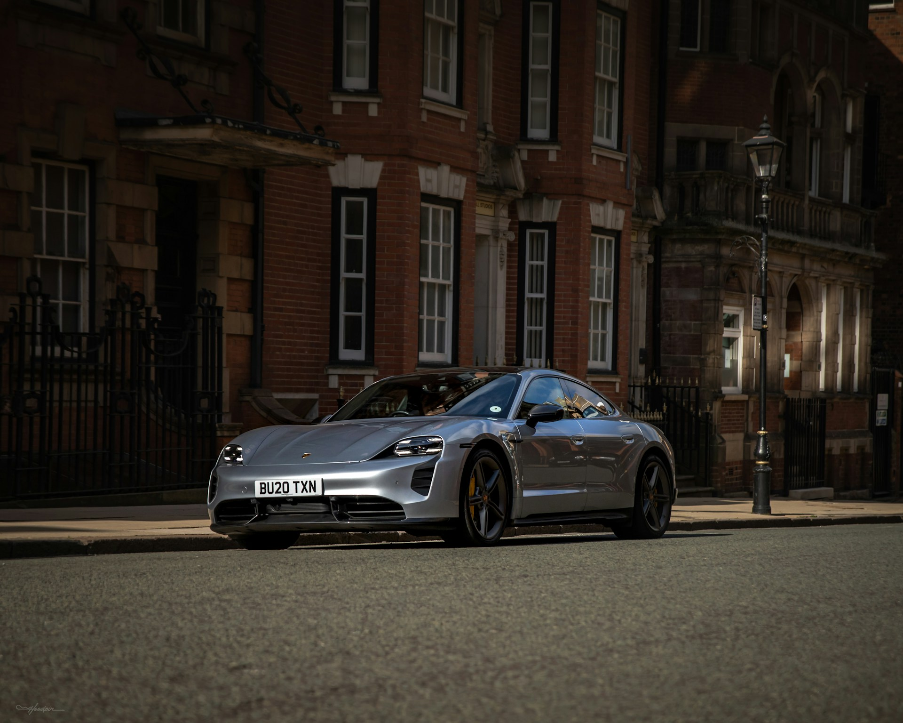
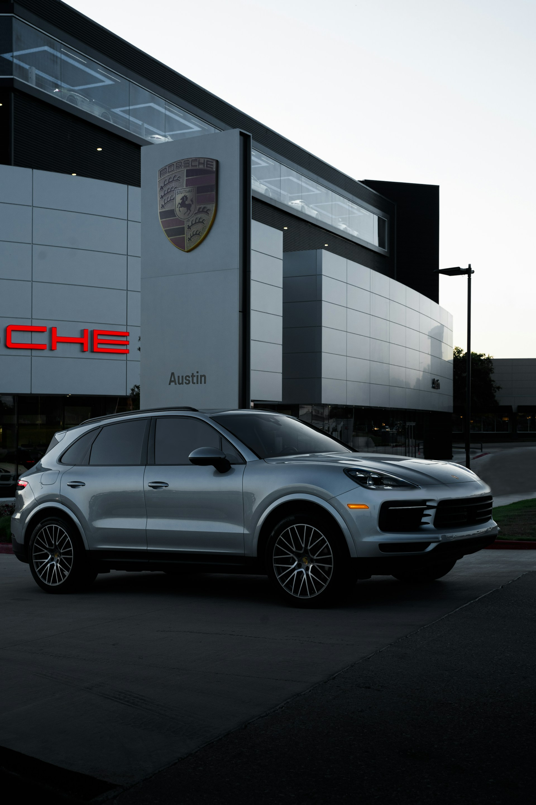

Ultimul model Porsche lansat până în prezent este Porsche Taycan, primul vehicul complet electric al mărcii. Taycanul a fost prezentat în 2019 și a devenit rapid un punct de referință în industria automobilelor electrice datorită performanței sale impresionante și designului său inovator. Este disponibil în mai multe variante, inclusiv Taycan Turbo și Taycan Turbo S, care oferă performanțe de top și autonomie decentă. În ceea ce privește alte modele recente, Porsche a continuat să își extindă gama cu modele precum noul Porsche 911 (992), care a fost lansat în 2019 și continuă tradiția de performanță și inovație a liniei 911. De asemenea, Porsche a lansat recent și o versiune actualizată a lui Porsche Macan, SUV-ul său compact, care a primit îmbunătățiri la nivelul designului și tehnologiei.
 